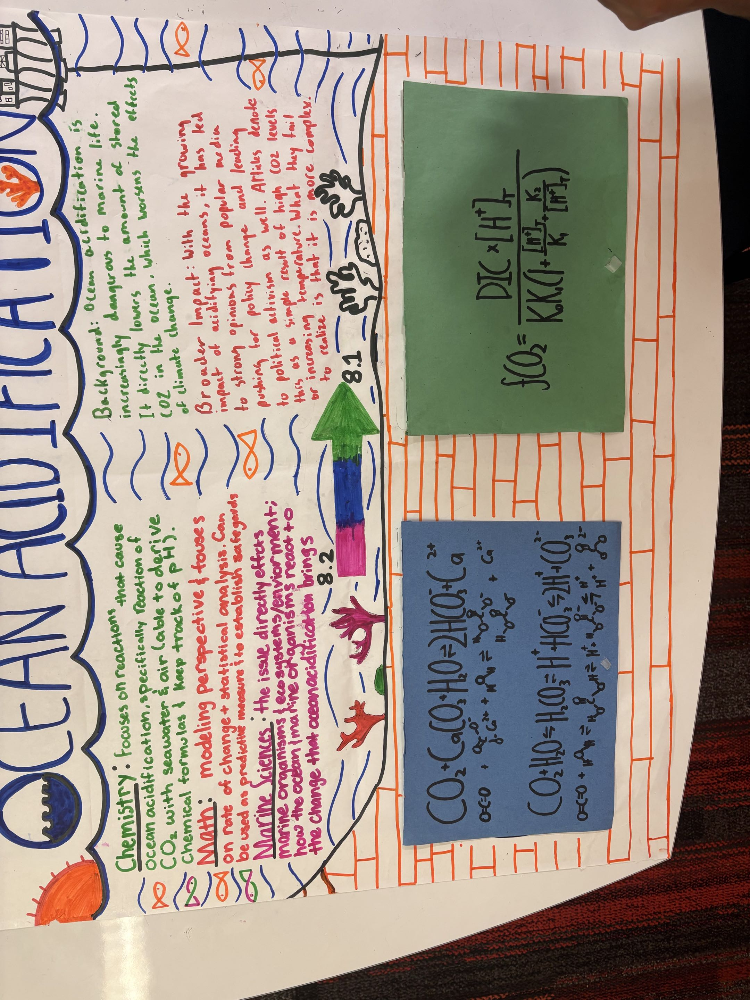
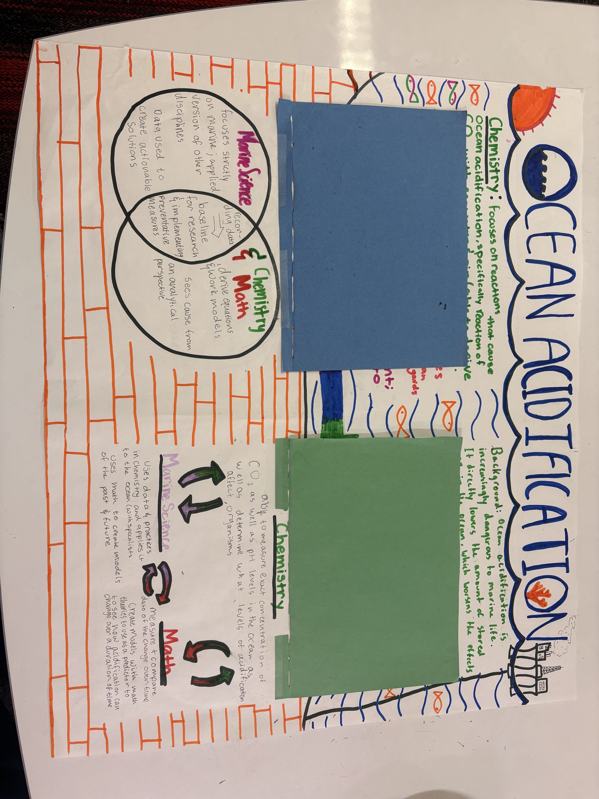

Ocean Acidification Poster


This poster showcases the group effort and artistic direction made by the group for COS 110. The poster displays the gradient increase of ocean acidity and has movable flaps to both show the mathmatical underpinnings while also looking aproachable.